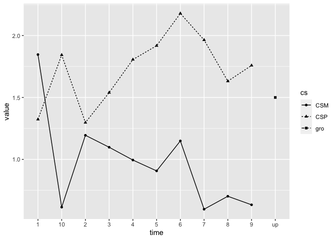
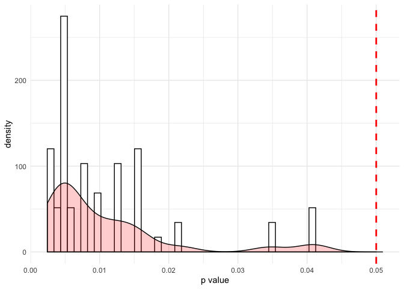

Multifear is an R package designed to perform multiverse analyses for human conditioning data. The package is currently under heavy development and its features change often. You can give the package for a spin but please do not use it yet for any publication as there is much more work to be done.
Installing and loading the package
# Install devtools package in case it is not yet installed install.packages("devtools") devtools::install_github("AngelosPsy/multifear")
The package can be loaded with the following package
Basic Example
We will start with a basic example of how the package works. Before doing that, let’s load some additional packages that we need for our example.
Now we will use some simulated data set that are included as example data in the package. In principle, you can use any data including conditioned responses (e.g., skin conductance). You can load the simulated data in your workspace as follows:
data("example_data")
From these data we are going to select only the 10 first lines – it saves a lot of time for computation for this example. Here are the first 10 rows of the data set
head(example_data, 10) #> id CSP1 CSP2 CSP3 CSP4 CSP5 CSP6 CSP7 #> 1 2 0.62905570 0.92988220 1.0415000 0.9330014 0.9743682 0.8855119 0.8418664 #> 2 3 7.07953400 4.97656500 12.7791100 8.2847610 4.9798520 8.8685450 8.2468480 #> 3 4 0.00000000 1.21569500 2.4367400 4.5100300 5.3372170 4.6831920 3.6484020 #> 4 5 1.43786800 0.97055850 0.3784756 1.4434960 0.4060977 1.6015840 1.5274500 #> 5 7 0.94540620 3.29359400 3.4376340 2.7078930 3.6439630 3.8878390 3.6174920 #> 6 8 3.23735900 2.34393600 2.3931960 2.2908990 1.9583950 2.5094320 2.4234050 #> 7 9 0.43832140 0.04669674 0.2307273 2.2448410 1.6178050 1.8630760 1.7384420 #> 8 10 0.03912846 0.20814220 0.4654428 0.5395534 0.4498870 0.5519411 0.4144870 #> 9 11 0.88479390 1.64638700 0.9605724 0.7427042 0.2084812 2.2864430 1.8098150 #> 10 12 2.61601700 2.23660600 2.5479610 1.8130030 2.6899810 2.0758690 3.1323380 #> CSP8 CSP9 CSP10 CSM1 CSM2 CSM3 CSM4 #> 1 0.9821523 0.5790559 0.3824215 0.9857365 1.2673990 0.0000000 0.64031250 #> 2 0.7607041 1.7655060 2.1758810 13.6548600 0.9066070 0.0000000 2.91306300 #> 3 2.1018580 6.4756940 2.6422620 0.0000000 3.2380020 2.4289650 0.25262940 #> 4 1.1900760 0.3994079 0.6168466 1.3146440 0.0000000 0.6570014 1.37108400 #> 5 2.2854040 5.2819210 4.5153330 4.2762160 3.1962110 3.4280200 1.88772700 #> 6 2.7189870 3.7545760 0.5508313 2.7552620 2.2843320 0.1147742 0.42298280 #> 7 1.5976320 0.8726718 2.5473010 0.3066088 1.5306480 2.1478420 0.46613780 #> 8 0.3175979 0.4557406 0.3433352 0.2956061 0.1793028 0.2681102 0.05366129 #> 9 1.7349280 1.8654570 0.9060298 1.2088490 0.4465152 0.8923611 1.56732600 #> 10 3.2265350 2.5452310 1.8400320 3.1200790 1.4983390 1.4273640 0.24111750 #> CSM5 CSM6 CSM7 CSM8 CSM9 CSM10 group #> 1 0.05137117 0.03480838 0.0000000 0.00000000 0.29036070 0.31496240 1 #> 2 0.60658980 3.72999700 1.1069910 3.63702500 0.00000000 0.00000000 2 #> 3 0.00000000 2.51429900 0.0000000 0.18621060 0.52076760 0.95751230 1 #> 4 0.53106310 0.54313130 0.2875019 0.00000000 0.18795960 0.18725370 2 #> 5 3.06479700 2.91668000 2.7914400 1.22984300 3.37716300 2.70570100 1 #> 6 2.22446600 0.00000000 0.0000000 1.21598600 0.00000000 0.00000000 2 #> 7 0.16134580 0.91540300 0.0000000 0.30176180 0.08460228 0.09295772 1 #> 8 0.10903030 0.00000000 0.0000000 0.04329369 0.19495150 0.30379580 2 #> 9 0.02774107 0.39216860 0.1940482 1.33170800 0.41266960 0.00000000 1 #> 10 0.72851310 0.96242680 0.0000000 1.27084300 0.03120063 0.00000000 2
A bit of explanation of the column names. With the column name ‘id’ is the participant number. Columns that contain the conditioned responses for conditioned stimulus plus (CS+) are denoted with column names starting with ‘CSP’. The number next to this name (1, 2, …, 10) is the trial number. The same goes for columns starting with ‘CSM’ but this denotes conditioned responses in CS- trials. At this point the package only supports a single CS+ and a single CS-. Also, the package assumes that trials are following each – so trial 2 comes after trial 1 etc. Let’s see the data:
datmelt <- example_data %>% select(-id) %>% colMeans() %>% reshape2::melt(dat) %>% mutate(variable = rownames(.)) %>% mutate(cs = stringr::str_sub(variable, 1, 3), time = stringr::str_sub(variable, 4, 5)) ggplot(data = datmelt, aes(x = time, y = value, group = cs)) + geom_line(aes(linetype = cs)) + geom_point(aes(shape = cs))

We see the basic learning pattern where CS+ responses end up being higher than CS- responses. The deep in CS+ on trial 2 is in line with the original data set.
Now we need to analyse the data. For this we will use the multifear::universe_cs function. In order for this function to work, we need to provide the following arguments.
CS1: This will be the column names that contain the conditioned responses for the CS+ (i.e., CSP1 until CSP10).
CS2: This will be the column names that contain the conditioned response for the CS- (i.e., CSM1 until CSM10).
data: This is our data frame that contain that data for the CS+, CS-, as well as the column with the participant number.
group. In case of a group, then we need to specify the column with the group name. The default option is that there are no groups and we do not have any groups in our example.
phase. Here we define the conditioning phase that the data were collected in (e.g., acquisition phase, extinction phase, etc). Please note that in case the user has multiple phases, she/he needs to run the function separately for each phases.
There are some other options in the function, such as defining the type of conditioning response. However, these are not necessary for now. So, let’s now run the function:
cs1 <- paste0("CSP", 1:10) cs2 <- paste0("CSM", 1:10) example_data <- example_data[1:10, ] res <- multifear::universe_cs(cs1 = cs1, cs2 = cs2, data = example_data, subj = "id", group = NULL, phase = "acquisition", include_bayes = FALSE) #> Registered S3 methods overwritten by 'lme4': #> method from #> cooks.distance.influence.merMod car #> influence.merMod car #> dfbeta.influence.merMod car #> dfbetas.influence.merMod car
And here are the results
res #> # A tibble: 4 x 14 #> x y exclusion model controls method p.value effect.size estimate #> <chr> <chr> <chr> <chr> <lgl> <chr> <dbl> <dbl> <dbl> #> 1 cs scr full data t-te… NA t-test 0.00244 0.577 1.17 #> 2 cs scr full data t-te… NA t-test 0.00488 0.577 1.17 #> 3 cs:t… scr full data rep … NA rep A… 0.0152 0.0307 NA #> 4 cs scr full data rep … NA rep A… 0.00488 0.157 NA #> # … with 5 more variables: statistic <dbl>, conf.low <dbl>, conf.high <dbl>, #> # framework <chr>, data_used <list>
Let’s go through each column separately
x : is the effect that you are testing. For example, the cs means that you are testing cs differences. cs:time the cs X time interaction is tested. Be careful: when testing interactions, we only report the highest order interaction. That means that if you have a cs x time interaction, you do not get the results of the cs or the time main effect.
y: the dependent variable. In the example this is the scr responses.
exclusion: This columns reports as to what data were included in the data set. For example, here you see that we have only full data sets – no exclusion. This is because the multifear::universe_cs() only analyses full data sets. If we want to apply some exclusion criteria, we need to run the multifear::multiverse_cs() function – see later on.
model: What model was used. For example, here we see t-tests, and rep ANOVA (which means repeated measures ANOVA).
controls: This column is left empty. I included it because the specs R package had it so we may need to use it later on.
method: The method is a combination of the model and x column. Not really necessary if the other two columns exist.
p.value: The p-value of the test
estimate: The estimate that is returned from the test. Keep in mind though that this applies only for the t-test at the moment. We need to see what we can do for the ANOVA,
statistic. The statistic of the test
conf.low and conf.high In case you have an estimate, this returns the low and high levels of it
framework were the data analysed within a NHST or Bayesian framework?
data_used Here you have a data frame with the data used for the performed analyses. This is because someone maybe wants to recreate the results and also as a check that nothing went wrong.
So now let’s see how you can run the same analyses but after we apply some selection criteria for non-learns. So, here it is
res_multi <- multifear::multiverse_cs(cs1 = cs1, cs2 = cs2, data = example_data, subj = "id", group = NULL, phase = "acquisition", include_bayes = TRUE) res_multi #> # A tibble: 150 x 16 #> x y exclusion model controls method p.value effect.size estimate #> <chr> <chr> <chr> <chr> <lgl> <chr> <dbl> <dbl> <dbl> #> 1 cs scr full_data t-te… NA t-test 0.00244 0.577 1.17e+0 #> 2 cs scr full_data t-te… NA t-test 0.00488 0.577 1.17e+0 #> 3 cs scr full_data Baye… NA t-test NA NA 2.57e+0 #> 4 cs scr full_data Baye… NA t-test NA NA 1.71e-1 #> 5 cs:t… scr full_data rep … NA rep A… 0.0152 0.0307 NA #> 6 cs scr full_data rep … NA rep A… 0.00488 0.157 NA #> 7 cs:t… scr full_data rep … NA rep B… NA NA 1.59e+0 #> 8 cs:t… scr full_data rep … NA rep B… NA NA 3.81e-1 #> 9 cs scr full_data rep … NA rep B… NA NA 5.86e+4 #> 10 cs scr full_data rep … NA rep B… NA NA 5.86e+4 #> # … with 140 more rows, and 7 more variables: statistic <dbl>, conf.low <dbl>, #> # conf.high <dbl>, framework <chr>, data_used <list>, cutoff <dbl>, #> # name_cutoff <chr>
In terms of calling the function, we see that we need exactly the same arguments as before. Internally, the function actually applies the multifear::universe_cs but now apart from the full data set, also for the data sets that we have set some exclusion criteria. Whether each line refers to the full data set or any of the exclusion criteria, we can see on the column exclusion criteria or in the data_used column, although there it is difficult to see what happened and it serves only reproduction criteria. So, the easiest thing to do is to see the exclusion column. Now, it has the following levels:
res_multi$exclusion %>% unique() #> [1] "full_data" "last_trial" "last2_trial" "last_first_trial" #> [5] "half_trials"
The exclusion criteria actually (largely) follow the criteria reported in the eLife article (“Navigating the garden of forking paths for data exclusions in fear conditioning research”; Lonsdorf et al., 2019). One problem with the criteria is that of course you have different number of trials, some studies exclude participants based on SCR but also on their ratings, etc. This of course makes it difficult to exactly apply all the criteria. To overcome this problem, we are going to form a summary of exclusion criteria. So here we are:
1) CS+/CS- differences for the last trial.
2) CS+/CS- differences for the last two trials.
3) CS+/CS- differences in the last half of the trials.
4) CS+/CS- differences between the last and first trial.
The cutoff for these differences are defined as 0, 0.05, and 1. So, we have every criterion, for every cutoff. So, what the function does is actually internally first computing the differences in all the possible combinations (i.e., last half of trials, differences in the last two trials, etc) and also applies the different criteria (0.05, 0.1, 0). Then, it repeats all the analyses performed in multifear::universe_us() function.
Inferences
This is the most challenging part. For now you can use the following function and you will get:
1) A histogram will all the p value and a red line showing the significance limit – by default alpha = 0.05
2) Mean p_value
3) the number of p values below the significance level
4) Mean of Bayes factors.
multifear::inference_cs(res_multi, na.rm = TRUE)
